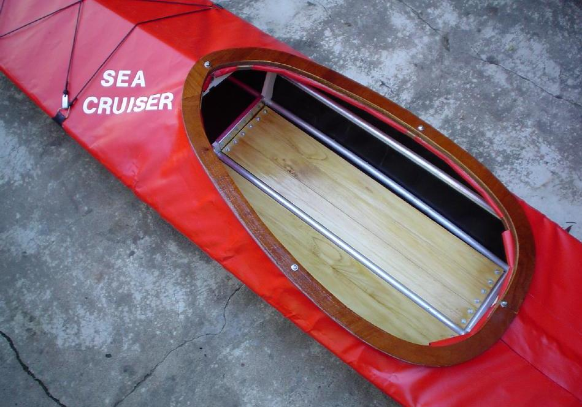

| Sea Cruiser | Menu Previous Page Next Page |
|

This Sea Cruiser folder, built by Rodolfo Maurette of Argentina, is a larger displacement Greenland kayak design. It has a 32"coaming to accomodate easier entry / exit for larger paddlers. The kayak features a wood coaming and Velcro zipper flap. Though similar in dimensions to a Feathercraft Khatsalano, it has a different hull shape plus a moderate amount of rocker. Overall stability is quite good. The Sea Cruiser / Sea Cruiser-R Offsets are at the end of this section. Use the (BACK) key to return.
|
|